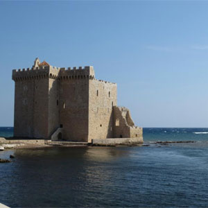
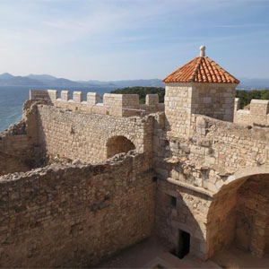

An American in Paris
St. Honorat Island
St. Honorat is an island only a short ferry ride from Cannes. Monks have inhabited this island since AD 410, and there are some amazing Medieval ruins you can visit here.
|
  Inside view of ruins |
View of new Monastary from the old |